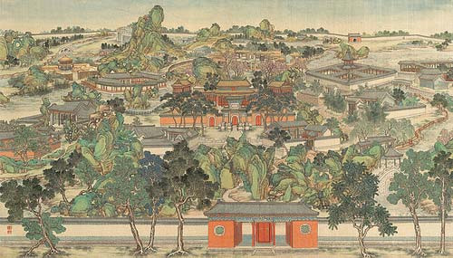

红楼梦的两个世界

Figure 1: 大观园图(局部) (清) 无名氏
Figure 2: 大观园(上海)
<br style="clear:both;" />
曹雪芹在《红楼梦》里创造了两个鲜明而对比的世界。这两个世界，我想分别叫它们作“乌托邦的世界”和“现实的世界”。这两个世界，落实到《红楼梦》这部书中便是大观园的世界和大观园以外的世界。作者曾用各种不同的象征告诉我们这两个世界的分别何在。譬如说， “清”与“浊”， “情”与“淫”， “假” 与 “真”以及风月宝鉴的反面与正面。我们可以说，这两个世界是贯穿全书的一条最主要的线索。把握到这条线索，我们就等于抓住了作者在创作企图方面的中心意义 。
当然，由于曹雪芹所创造的两个世界是如此的鲜明，而它们的对比又是如此的强烈，从来的读者也都或多或少、或深或浅地意识到它们的存在。但在最近50年中《红楼梦》研究基本上乃是一种史学的研究。而所谓红学家也多数是史学家；或虽非史学家，但所作的仍是史学的工作。史学家的兴趣自然地集中在《红楼梦》的现实世界上。他们根本不大理会作者“十年辛苦”所建造起来的空中楼阁——《红楼梦》中的理想世界；相反地，他们的主要工作正是要拆除这个空中楼阁，把它还原为现实世界的一砖一石。在 “自传说”的支配之下，这种还原的工作更进一步地从小说中的现实世界转到了作者所生活过的真实世界。因此半个世纪以来的所谓“红学” 其实只是“曹学”，是研究曹雪芹和他的家世的学问。用曹学来代替红学。是要付出代价的。最大的代价之一，在我看来便是模糊了《红楼梦》中两个世界的界线。1961至1963年之间，大陆上的红学家曾热烈地寻找“京华何处大观园”。这可以说是历史还原工作的最高峰。这就给人一种明确的印象，曹雪芹的大观园本在人间，是现实世界的一部分。《红楼梦》里的理想世界被取消了，正像作者说的，
落了片白茫茫大地真干净！
但是在过去几十年中，也并不是没有人特别注意到《红楼梦》中的理想世界。早在1953或 1954年，俞平伯就强调了大观园的理想成分。以想象的境界而论，大观园可以是空中楼阁。他并且根据第十八回贾元春“天上人间诸景备”的诗句，说明大观园只是作者用笔墨渲染而幻出的一个蜃楼乐园。俞平伯的说法在红学史上具有库恩(Thomas S.Kuhn)所谓典范 (paradigm)的意义。可惜他所处的环境使他不能对他这个革命性的新观点加以充分的发挥。 1972年宋淇发表了《论大观园》这可以说是第一篇郑重讨论《红楼梦》的理想世界的文字。他强调大观园决不存在于现实世界之中，而是作者为了迁就他的创造企图虚构出来的空中楼阁。宋淇更进一步说：
大观园是一个把女儿们和外面世界隔绝的一所园子，希望女儿们在里面，过无忧无虑的逍遥日子，以免染上男子的龌龊气味。最好女儿们永远保持她们的青春，不要嫁出去。大观园在这一意义上说来，可以说是保护女儿们的堡垒，只存在于理想中，并没有现实的依据。”[1]
这番话说得既平实又中肯，我愿意把这一段话作为我讨论《红楼梦》的两个世界的起点。关于五十多年来红学发展的内在逻辑及其可能发生的革命性的变化我已在《近代红学的发展与红学革命——一个学术史的分析》一文中作了初步的检讨。所以详细的论证和根据这里一概从略。
说大观园是曹雪芹虚构的一个理想世界，会无可避免地引起读者一个重要的疑问：如果大观园是一个“未许凡人到此来”的“仙境”，那么作者在全书总纲的第五回里所创造的“太虚幻境”在《红楼梦》全书中究竟应该占据一个什么位置呢？我们当然可以说“太虚幻境”是梦中之梦、幻中之幻。但这样一来，我们岂不应该说《红楼梦》里一共有三个世界了吗？庚辰本脂批有这样一条：
大观园系玉兄与十二钗之太虚玄境，岂可草率？[2]
这里“玄境”的“玄”字其实就是“幻”字，一定是抄者的笔误，因为这一条里还有好几字写错了。所以根据脂砚斋的看法，大观园便是太虚幻境的人间投影。这两个世界本来是叠合的。我们现在还不知道脂砚斋到底是谁。但他和作者有密切的关系，并且相当了解作者的创作意向，大概是不成什么问题的。我们虽然不能过于相信脂批，可是在内证充分的情况下，脂批却是最有力的旁证。让我们现在看看《红楼梦》本文里面的直接证据。第五回
宝玉随秦可卿至一所在。但见朱栏白石，绿树清溪，真是人迹希逢，飞尘不到。宝玉在梦中欢喜，想道：“这个去处有趣。我就在这里过一生，纵然失了家，也愿意。”[3]
这个所在其实就是后来的大观园。怎样证明呢？就风景而言第十七回宝玉随贾政入大观园，行至沁芳亭一带，书中所描写的恰恰就是“朱栏白石，绿树清溪＂这八个字的加详和放大。[4]就心情而言，我们应该记得第二十三回宝玉初住进大观园时，作者写道：
且说宝玉自进园来，心满意足，再无别项可生贪求之心。[5]
细心的读者只要把前后的文字加以比较，就不难看出太虚幻境和大观园是一种什么关系了。如果说这条证据还嫌曲折了一点，那么让我再举一条更直接、更显豁的证据，以坚读者之信。故事还是出在第十七回，宝玉和贾政一行人离了蘅芜苑，来到了一座玉石牌坊之前，
贾政道：“此处书以何文？”众人道：“必是‘蓬莱仙境’方妙。”贾政摇头不语。宝玉见了这个所在，心中忽有所动，寻思起来倒像那里曾见过的一般，却一时想不起那年月日的事了。贾政又命他作题，宝玉只顾细思前景，全无心于此了。
贾政还特别补上一句：
这是要紧一处，更要好生作来。[6]
宝玉以前在什么地方见过石牌坊的呢？宝玉自己也许忘了。可是读者一定还记得，第五回宝王梦游太虚幻境
随了仙姑至一所在。有石牌坊横建，上书“太虚幻境”，四个大字。[7]
宝玉在记忆中追寻的岂不明明就是这个地方吗？所以脂砚斋特别在此点醒读者曰：
仍归于葫芦一梦之太虚玄境。[8]
贾政说：“这是要紧一处。”是的，《红楼梦》中还有比太虚幻境更要紧的所在吗？这个石牌坊，宝玉事后是补题了，题的是“天仙宝镜”四字[9]。也就是这座牌坊，后来刘姥姥又误认作是“玉皇宝殿”，而大磕其头[10]。总而言之，“蓬莱仙境”也好，“天仙宝镜”也好，“玉皇宝殿”也好，作者是一而再，再而三地在点醒我们大观园不在人间，而在天上；不是现实，而是理想。更准确地说，大观园就是太虚幻境。[11]大观园既是宝玉和一群女孩子的太虚幻境，所以在现实世界上，它的建造必须要用元春省亲这样一个郑重的大题目。庚辰本第十六回有一段畸笏的眉批说：
大观园用省亲事出题，是大关键事，方见大手笔行文之立意。[12]
作者安排的苦心尚不止此。第十七回开头一段叙事便很值得玩味。园内工程告竣后，贾珍请贾政进去瞧瞧，有什么要更改的地方，并说贾赦已先瞧过了。这好像是说，贾赦是第一个入园子的人。其实这段话是故意误引读者入歧途的。因为后文又说：
可巧近日宝玉因思念秦钟，忧戚不尽，贾母常命人带他到园中来戏耍。
紧接下去，便是宝玉避之不及，和贾政劈面相逢，终于被逼着一齐再进园子去题联额[13]。这段叙事的后半截至少暗涵着两层深意：一、宝玉是最早进大观园去赏玩景致的人。贾赦、贾政等都是在园子完工后才进去勘察的，而宝玉早在这以前�己去过不止一次了。二、大观园既是宝玉和诸姐妹的乌托邦、干净土，则园中亭台楼阁之类，自然非要他们自己命名不可。大观园这个“未许凡人到此来”的仙境是决不能容许外人来污染的。所以庚辰本十七回的总批说：
宝玉系诸艳之冠，故大观园对额必得玉兄题跋。[14]
同本又有一条批语说：
如此偶然方妙，若特特唤来题额，真不成文矣。[15]
这些地方，脂评都可以帮助读者了解作者的原意。《红楼梦》之绝少闲笔，我们有时也要通过脂评，才能体会得更深刻。我们知道，宝玉当日并没有题遍大观园中所有的联额。事实上园中建筑物太多，命名之事也不是宝玉一个人能够包办得了的。那么，还有谁题过联额呢？这个谜直到第七十六回才解开。在这一回里黛玉和湘云中秋夜赏月联句。湘云称赞凸碧堂和凹晶馆两个名字用得新鲜。黛玉对湘云说：
实和你说罢，这两个字还是我拟的呢。因那年试宝玉，因他拟了几处，也有存的，也有删改的，也有尚未拟的。这是后来我们大家把这没有名色的，也都拟出来了，注了出处，写了这房屋的坐落，一并带进去与大姐姐瞧了。他又带出来命给舅舅瞧过。谁知舅舅倒喜欢起来，又说：“早知这样，那日就该叫他姐妹一并拟了，岂不有趣。”所以凡我拟的一字不改，都用了。[16]
这段话才把当日大观园初题联额的情节完全补出。可见园内各处的命名，除宝玉外，其余也都出自诸姊妹，尤其是黛王之手。第七十六回和第十七回，相去60回之遥，且就曹雪芹已完成的原稿来说，则已几几乎婪尾余香，而前后呼应，如常山之蛇。《红楼梦》的创作作者时时有全局在胸，是非常明显的。
大观园是《红楼梦》中的理想世界，自然也是作者苦心经营的虚构世界。在书中主角贾宝玉的心中，它更可以说是唯一有意义的世界。对宝玉和他周围的一群女孩子来说，大观园外面的世界是等于不存在的，或即使偶然存在。也只有负面的意义。因为大观园以外的世界只代表肮脏和堕落。甚至一般《红楼梦》读者的眼光也往往过分为大观园这个突出的乌托邦所吸引，而不免忽略了大观园以外的现实世界。但是曹雪芹自己却同样地非常重视这个肮脏和堕落的现实世界。他对现实世界的刻划也一样的费尽了心机的。这里可以清楚地看出作者、主角和读者之间，是存在着不同的观点的。“自传说”之混曹雪芹和贾宝玉为一人，其最根本的困难便在于无法解决这个重要的观点的问题。
曹雪芹虽然创造了一片理想中的净土，但他深刻地意识到这片净土其实并不能真正和肮脏的现实世界脱离关系。不但不能脱离关系，这两个世界并且是永远密切地纠缠在一起的。任何企图把这两个世界截然分开并对它们作个别的、孤立的了解，都无法把握到《红楼梦》的内在完整性。为了具体地说明这一点，让我们检讨一下大观园的现实基础。第十六回对于大观园的建造有很清楚的叙述。园子的基址是
从东边一带借着东府花园起，转至北边，一共丈量准了，三里半大。[17]
下面还有一段更详细的报道：
先令匠人拆宁府会芳园墙垣楼阁，直接入荣府东大院中。……会芳园本是从北拐角墙下引来一段活水，今亦无烦再引。其山石树木虽不敷用，贾赦住的乃是荣府旧园，其中竹树山石以及亭谢栏杆等物，皆可挪就前来。[18]
这些话里大有文章，可惜自来红学家在“自传说”支配之下，根本未作进一步的分析[19]。上面我们已看到，大观园的出现是《红楼梦》中第一大事，作者和批者都一再郑重其事地加以点明。那么，作者在这里细说大观园的现实来历，决不会是没有用意的。如果“自传说”可以解答问题，确切地考出大观园是由曹家旧宅改建而成的，那当然再好没有。而事实上此路确是不通，我们只好另辟途径。照上面的叙述，大观园的现实基址主要是由两处旧园于合成的：即宁府的会芳园和贾赦住的荣府旧园。庚辰本第十七回在“上面苔薛成斑，藤萝掩映”句下有一条批语说：
曾用两处旧有之园所改，故如此写方可。细极。[20]
可见作者和批者，一暗一明，都特别提醒我们，这两所旧园子里面是藏着重要消息的。什么消息呢？让我们先从贾赦说起。贾赦这个人在《红楼梦》里可算得是最肮脏的人物之一。《红楼梦》里有一条无形的章法，即凡是比宝玉长一辈的人，对他的不堪之处，描写时多少都有相当的保留，这也可以说是“为尊者讳”吧！所以书中极力渲染的脏事情，大都集中在贾珍、贾琏、薛蟠等几个宝玉的平辈身上。这些地方，也确露出“自传”的痕迹[21]。但是尽管如此，作者对贾赦还是不肯轻易放过。所以第四十六回特立专章声讨,详写他要强纳鸳鸯为妾的丑事。作者曾借袭人之口写出他的安家定论：
真真——这话理论不该我们说——这个大老爷太好色了。略平头正脸的他就不放手了。[22]
《红楼梦》中对贾琏的淫行最多特写镜头，恐怕就是要曲达“有其父必有其子”这句古谚吧。所以，贾赦住过的园子和接触过的竹树山石以及亭棚栏杆等物自然也都是天下极脏的东西了。再说东府园子，那就更是龌龊不堪之至了。正如柳湘莲的名言所说的，
你们东府里，除了那两个石头狮子干净，只怕连猫儿、狗儿都不干净”[23]。
这还是一般性的说法。我们得更深一层分析一下会芳园这个地方。在第十六回以前，大观园尚未出现，《红楼梦》里的许多重大事故都是在会芳园这个舞台上上演的。会芳园中的楼阁现尚可考的有天香楼、凝曦轩、登仙阁等处。天香楼自然是最有名的脏地方。因为原本第十三回回目就叫做“秦可卿淫丧天香楼”。其他两处也一样地不干净。凝曦轩是爷儿们吃酒取乐之处，凤姐所谓“背地里又不知干什么去了”的一个所在[24]。这只要看看后来第七十五回贾珍诸人在天香楼聚赌说脏话和玩娈童的情形，就可以知道了[25]。至于登仙阁，则是秦可卿自缢和瑞珠触柱后停灵的地方[26]。会芳园还发生过一件秽事，便是第十一回“见熙凤贾瑞起淫心”。凤姐遇到贾瑞便恰恰是在这个园子里面[27]。
所以，总而言之，贾赦住的旧园和东府的会芳园都是现实世界上最肮脏的所在，而却为后来大观园这个最清净的理想世界提供了建造原料和基址。这样的安排难道会是偶然的吗？甚至大观园中最干净的东西——水，也是从会芳园里流出来的。甲戌、庚辰两本在这里都有同一条脂评，说：
园中诸景最要紧是水，亦必写明为妙。[28]
可见作者处处要告诉我们，《红楼梦》中干净的理想世界是建筑在最肮脏的现实世界的基础之上。他让我们不要忘记，最干净的其实也是在肮脏的里面出来的。而且，如果全书完成了或完整地保全了下来。我们一定还会知道，最于净的最后仍旧要回到最肮脏的地方去的。“欲洁何曾洁，云空未必空[29]”这两句诗不但是妙玉的归宿，同时也是整个大观园的归宿。妙玉不是大观园中最有洁癖的人吗？曹雪芹一方面全力创造了一个理想世界，在主观企求上，他是想要这个世界长驻人间；而另一方面，他又无情地写出了一个与此对比的现实世界。而现实世界的一切力量则不断地在摧残这个理想的世界，直到它完全毁灭为止。《红楼梦》的两个世界不但是有密不可分的关系。并且这种关系是动态的，即采取一种确定的方向的。当这种动态关系发收到它的尽头，《红楼梦》的悲剧意识也就升进到最高点了。
前面我们曾指出，《红楼梦》的两个世界是干净与肮脏的强烈对比。现在我们应该进一步探讨一下，大观园里面的人物对这两个世界的看法是否可以证实我们的观察。在这个关联上，我们要检讨“黛玉葬花”的意义。黛玉葬花发生在第二十三回, 宝玉和诸钗刚刚在大观园中开始他们的理想生活。所以作者对这个故事的安排，不用说，是涵有深意的。由于这个故事太重要了，我们不得不把最有关系的一段文字全引在这里：
那一日正当三月中浣，早饭后，宝玉携了一套《会真记》，走到沁芳闸桥边桃花底下一块石上坐着。展开《会真记》，从头细玩。正看到落红成阵，只见一阵风过，把树上桃花吹下一大半来，落的满书满地皆是。宝玉要抖将下来，恐怕脚步践踏了，只得兜了那花瓣，来至池边，抖在池内。那花瓣浮在水面，飘飘荡荡，竟流出沁芳闸去了。回来只见地下还有许多。宝玉正踌躇间，只听背后有人说道：“你在这里作什么？”宝玉一回头，却是林黛玉来了，肩上担着花锄，上挂着纱囊，手内拿着花帚。宝玉笑道：“好，好，来把这个花扫起来，撂在那水里。我才撂了好些在那里呢。”林黛玉道：‘撂在水里不好。你看这里的水干净，只一流出去，有人家的地方脏的臭的混倒，仍旧把花糟蹋了。那畸角上我有一个花冢。如今把他扫了，装在这绢袋里，拿土埋上，日久不过随土化了，岂不干净。”[30]
<br style="clear:both;" />
“黛玉葬花＂早在清末便上过京剧的舞台。民国初年经过梅兰芳和欧阳予倩这两位名演员重新编演之后，这个故事在中国已几乎是家喻户晓了。但大家的注意力都集中在宝、黛两人的爱情发展方面，尤其是第二十七回“埋香冢飞燕泣残红”那一段哀感动人的情节[31]。而红学家所注意的又往往在“葬花”一词的出处[32]。至于黛玉为什么要葬花这个问题。似乎还没有认真地被提出来过。我愿意郑重地指出，黛王葬花一节正是作者开宗明义地点明《红楼梦》中两个世界的分野。我说“开宗明义”，因为“葬花”是宝玉等入住以后，大观园中发生的第一件事故。黛玉的意思很明显，大观园里面是干净的但是出了园子就是脏的臭的了。把落花葬在园子里，让它们日久随土而化这才能永远保持清洁。“花”在这里自然就是园中女孩子们的象征。怎见得？有诗为证。黛玉《葬花词》说：
未若锦囊收艳骨，一堆净土掩风流。 质本洁来还洁去，强于污淖陷渠沟。[33]
所以第六十三回群芳夜宴，每个女孩子都分配一种花。而第四十二回凤姐更明明告诉读者：“园子里头可不是花神！[34]”，第七十八回 晴雯死后成花神的故事也得在这个意义上去求了解[35]。花既象征园中的人物，那么人物若想保持干净、纯洁，唯一的途径便是永驻理想之域而不到外面的现实世界去。我在前面曾说，对于宝玉和大观园中的女孩子们来说，外面的世界是等于不存在的。但这话只是要指出，在主观愿望上，他们所企求的是理想世界的永恒，是精神生命的清澈；而不是说，他们在客观认识上，对外在世界茫无所知。园中女孩子们，诚如作者所说，是“天真烂漫”的[36]，可是他们并非幼稚胡涂。事实上，她们一方面把两个世界区别得泾渭分明，而另一方面又深刻地意识到现实世界对理想世界的高度危害性。“黛玉葬花”正是通过形象化的方式把这两层意思巧妙地表达了出来。曹雪芹有时也用明确而尖锐的语言点出外面世界的险恶。第四十九回是大观园的盛世的始点，许多重要的人物如薛宝琴、邢岫烟、李纹、李绮等都住进了园子。也就是在这一回，史湘云警告宝琴道：
你除在老太太眼前，就在园子里，来这两处，只管顽笑吃喝。到了太太屋里，若太太在屋里，只管和太太说笑，多坐一会无妨；若太太不在屋里，你别进去，那屋里人多心坏，都是要害咱们的。
接着宝钗笑道：
说你没心，却又有心；虽然有心，到底嘴太直了。[37]
湘云这番话真是说得直率，明眼读者自会看出，她事实上对王夫人也颇有贬词。所以除了大观园这个乌托邦以外，便只有史太君跟前尚属安全。其余外面的人都是要害园子里面的人的。为什么史太君会是个例外呢？因为她是从前枕霞阁十二钗中的人物，在大观园中人的眼里，尚不失为“我辈中人”也[38]。这种强烈的“咱们”“他们”的分别正是相应于两个世界而起的。[39]但是大观园中的“咱们”也不都是一律平等的，理想世界依然有它自已的秩序。“桃花源”是中国文学史上最早的一个乌托邦。照王安石说，它是“但有父子无君臣”。换言之，桃花源中虽无政治秩序，却仍有伦理秩序。大观园的秩序则可以说是以“情”为主，所以全书以情榜结尾。但由于“情榜”已不可见，今天要想完全了解作者心目中的秩序，可以说己无可能。大体上说作者决定“情榜”名次的标准是多重的；故除了“情”字外，我们还得考虑到其他标准如容貌、才学、品行、以至身份等等[40]。这里我只想提出一个比较被忽略了的重要线索，即群芳与宝玉的关系。庚辰本第四十六回有一条批语说：
通部情案，皆必从“石兄”挂号，然各有各稿，穿插神妙。[41]
这一条评语我觉得特别重要。“情案”之“情”即是“情榜”之“情”。这样看来，书中诸人与宝玉之间关系的深浅、密疏，必然会在很大的程度上决定着他们在情榜上的地位[42]。而了解大观园世界的内在结构，也就必须个别地察看书中诸人如何在“石兄”处挂号了。
谈到大观园世界的内在结构，我们便不能不稍稍注意一下园中房屋的配置。这种配置，在我看来，也正是内在结构的一个清晰的反映。宋淇曾指出，大观园中的庭园布置和室内装设都是为了配合几位主角的性格而创造出来的[43]。这一点很正确，而且这也符合西方文学批评的原理。主角住处的布景往往是他的性格的表现，“一个人的房子即是他自己的一种伸延”[44]。但是曹雪芹对于布景的运用更有进于此者。他利用国中院落的大小、精粗，以及远近来表现理想世界的秩序。这里只举几个最紧要的例子作为初步的说明。我们记得，第十七回宝玉题大观园联额，作者主要只写了四所院宇。这四所院宇依次为潇湘馆、稻香村、蘅芜苑和怡红院。这里面的评论都是有寓意的。先说潇湘馆。众人一见，都道：“好个所在。”而宝玉更认为这是第一处行幸之处，必须颂圣方可。所以题作“有凤来仪”[45]。这已可以看出作者对潇湘馆的特致郑重之意了。庚辰本在“好个所在”之下则批道：
此方可为颦儿之居。[46]
这还不算。下文第二十三回宝玉和黛玉商量住处时，
黛玉说：“我心里想着潇湘馆好。”宝玉拍手笑道；“正和我的主意一样。我也要叫你住这里呢。我就住怡红院。咱们两个又近，又都清幽。[47]”
后文第六十三回群芳夜宴，
宝玉说：“林妹妹怕冷，过这边靠板壁坐。”
正可与此同观[48]。这正是用距离和环境来表现宝、黛之间的特殊关系的最好例证。再看稻香村。贾政问宝玉：“此处如何？”宝玉应声说：“不及‘有凤来仪’多矣。”接着便发了一大篇议论，说此处是人力强为，没有“天然”意味。结果惹得贾政大为气恼[49]。不但如此，后文宝玉奉元春之命写四首诗，而单单稻香村一首写不出来，终由黛玉代笔才算交卷[50]。这都表现宝玉对李纨的微词。李纨在大观园中是唯一嫁过人的女子，而我们当然都知道宝玉对已婚女子的评价。但李纨毕竟是宝玉的嫂嫂，并且人品又极好，因此这种微词便只好如此曲曲折折地显露出来。其中“天然” “人力”的分别尤堪玩味。李纨在正册中居倒数第二位，仅在秦可卿之上，是不为无因的。那么蘅芜苑又如何？贾政道：
此处这所房子无味的很。[51]
岂非又是作者之微词乎？可是妙在从贾政口中说出来，仍给宝玉留了地步。这就避开了俞平伯所谓“分高下”的问题 [52] 。这里有一条脂批，颇得作者之心：
先故顿此一笔，使后文愈觉生色，未扬先抑之法。盖钗颦对峙，有甚难写者。[53]
更妙的是后来在第五十六回探春又补上一句：
可惜蘅芜苑和怡红院这两处大地方竟没有出利息之物。[54]
闲闲一语透露了蘅芜苑和怡红院并为大观园中最大的两所住处。木石虽近而金玉齐大，正是脂砚斋所谓“钗颦对峙”也。最后说到恰红院。这一段的描写最为详细，要分析起来，可说的话太多。现在姑举三点：宝玉要题“红香绿玉”两全其妙，是章法之一，这在后来元春命宝玉赋诗一节中尚有照应；怡红院中特设大镜子，别处皆无，是章法之二，即所谓“风月宝鉴”也；园中的水“共总流到这里，仍旧合在一处，从那墙下出去”，是章法之三[55]。而尤以最后一点最值得注意。脂评说：
于怡红总一园之看（？），是书中大立意[56]
这正证实我们上面所说的，作者是借着院字的布置来表示诸钗和宝玉之间的关系。因而间接地说明理想世界的内在结构。脂评所谓“通部情案皆必从石兄挂号”，便要在这些地方去认识。而园中之水流于怡红院之后，仍从墙下出去，又正关合葬花时黛王所说的，这里的水干净，只一流出去。就是脏的臭的了。
Figure 3: 理想中的大观园
我们一直强调，《红楼梦》的两个世界是干净和肮脏的强烈对照。上面无数例证都可以在概念上支持我们关于这个基本分别的看法。但是最后我还必须要解答一个具体的经验性的问题：即大观园中的生活是不是真的干净？如果大观园跟外面的现实世界同样的肮脏，那么我们所强调的两个世界的对照，依然难免捕风捉影之讥。关于这个问题的解答，我们当然不能采用上面举例证明的方式。因为不存在的东西——肮脏——是不会有证据的。我们可以这样说，原则上曹雪芹在大观园中是只写情而不写淫的，而且他把外面世界的淫秽渲染得特别淋漓尽致，便正是为了和园内净化的情感生活作一个鲜明的对照。我们知道，大观园基本上是一个女孩子的世界。除了宝玉一个人之外，更无其他男人住在里面[57]。因此，只要我们能证明宝玉园中生活是干净的，《红楼梦》的理想世界的纯洁性也就有了起码的保障。关于这一层，作者曾有意地给我们留下了一个重要的线索。第三十一回，宝玉要晴雯和他一起洗澡。晴雯笑说：
还记得碧痕打发你洗澡，足有两、三个时辰。也不知道作什么呢，我们也不好进去的。后来洗完了，进去瞧瞧。地下的水淹床腿，连席子上都汪着水，也不知是怎么洗了。 [58]
这番话初看起来好像颇有文章。其实，这只是作者的狡猾。故用险笔来引人入歧路的。原来宝玉进大观园后，袭人因为得到王夫人赏识。所以特别自尊自重，和宝玉反而疏远了。夜间同房照应宝玉的乃是晴雯[59]，如果宝玉有什么越轨行为，那么晴雯的嫌疑可以说是最大。晴雯之终被放逐，也正坐此。可是事实上我们知道宝玉和晴雯一直干干净净的，所以晴雯临死才有“担了虚名”之说。作者为了证明二人的清白，特别找一个书中最淫荡不堪的灯姑娘出来作见证。灯姑娘说：
我进来一会在窗外细听，屋里只你二人，若有偷鸡盗狗的事，岂有不谈及的，谁知道两个竟还是各不相扰。可知天下委屈事也不少。[60]
正像解意居士所说的：窗外潜听，正所以表晴雯之贞洁也。不然，虚名二字，谁其信之？[61]其实灯姑娘的话岂止洗刷了宝玉和晴雯的罪名，而且也根本澄清了园内生活的真相。宝玉和最亲密而又涉嫌最深的晴雯之间，尚且是“各不相扰”，则其他更不难推想了[62]。最后还有一个棘手的问题需要交代，即七十三回傻大姐误拾绣春囊的故事。这个故事表面上和我们所谓大观园是清净的乌托邦说最为矛盾，但细加分析，则正合乎我们的两个世界的理论。这个绣春囊当然是第七十一回司棋和她表弟潘又安在园中偷情时失落的[63]。可是在七十二回开始时作者明说二人被鸳鸯惊散，并未成双[64]。可见大观园这个清净世界虽已到了堕落的边缘尚未完全幻灭。更值得注意的是在第七十四回查明有犯奸嫌疑的人是司棋之后，司棋只是低头不语，却毫无畏惧惭愧之意[65]。那么司棋的勇气是从什么地方来的呢？这就要归结到我们在注[1]中所分析的“清”与“淫”的分别上去了。司棋显然是深深地爱恋着她的表弟的[66]。根据作者“知情更淫”和“情既相逢必主淫”的说法，这种世俗所不谅的“奸情”未必一定是什么罪恶。而目和外面世界的“脏唐臭汉”[67]比起来，更谈不上什么肮脏。再换一个角度来看，如果作者是要把这件公案作为一个肮脏事件来处理，那么我们必须说，这正是《红楼梦》的悲剧中所必有的一个内在发展。我们在前面己指出《红楼梦》的理想世界最后是要在现实世界的各种力量的不断冲击下归于幻灭的。绣春囊之出现在大观园正是外面力量入侵的结果。但外面力量之所以能够打进园子，又显然有内在的因素，即由理想世界中的“情”招惹出来的。理想世界的“情”诚然是干净的，但它也像大观园中的水一样的，而且无可避免地要流到外面世界去的。从这个意义上说，《红楼梦》的悲剧性格是一开始就被决定了的。我们曾说，曹雪芹所创造的两个世界之间存在着一种动态的关系。我们现在可以加上一句，这个动态的关系正是建筑在“情既相逢必主淫＂的基础之上。许多迹象显示，曹雪芹从《红楼梦》的七十一回到八十回之间，已在积极地布置大观园理想世界的幻灭。最明显的是第七十六回黛玉和湘云中秋夜联诗黛玉最后的警句竟是:
冷月葬花魂。
所以妙玉特地来打断她们，并说：
只是方才我听见这一首中，句虽好，只是过于颓败凄楚，此亦关人之气数，所以我出来止住。[68]
我们知道，花本是园中女孩子的象征，现在由黛王口中唱出“葬花魂”的挽歌，可见大观园的气数是真的要尽了。这样看来，绣春囊之适在此际出现于《红楼梦》的清净世界之中，当非偶然。夏志清把这件事比之于伊甸园中蛇的出现，因为蛇一出现，亚当和夏娃就从天堂堕落到人间。宋淇引之，许为“一针见血之言”，这是不错的[69]。
《红楼梦》今本120回不出一手，至少在目前的研究阶段上已成定论。在公认为曹雪芹所写的80回中，大观园表面上依然是一个“花柳繁华之地”，因此我们无从知道作者究竟如何刻划大观园的破灭。略可推测者，作者大概运用强烈的对照来衬托结局之悲惨。所以第四十二回靖应鹍藏本脂批有“此后文字，不忍卒读”之说[70]。据周汝昌的判断，“后半部中所有人物的原来身份地位都发生‘大颠倒’的现象”[71]。这一层，所有研究《红楼梦》的人大致都可以首肯。这种颠倒恐怕并不限于人物，大观园这个清净的理想世界也不免要随着而遭到一番颠倒，比如说从繁华到破落[72]。而且人物的前后颠倒也不止于身份地位方面；从我们的两个世界说来看，其中还必然在一定的程度上涉及干净和肮脏的颠倒。大观园中的人物都爱干净，这是人所共知的。但是越是有洁癖的人往往也就越招来肮脏。最显著例子出在第四十回和四十一回。贾母带着刘姥姥一群在探春屋里参观。贾母笑道：
咱们走罢。他们姊妹们都不大喜欢人来坐着，怕脏了屋子。
探春笑留众人之后，贾母又笑着补上一句道：
我的这三丫头却好。只有两个玉儿可恶，回来吃醉了，咱们偏往他们屋里闹去。[73]
这里的“两个玉儿”当然是指宝玉和黛玉。但作者忽然添写此一段文字是有重要作用的，就是为次一回“刘姥姥醉卧冶红院”作伏笔。宝玉最嫌嫁了汉子的老女人肮脏，而作者就偏偏安排了刘姥姥之醉卧在他的床上，而且弄得满屋子“酒屁臭气”[74]。这明明是有意用现实世界的丑恶和肮脏来点污理想世界的美好和清洁。同回刘姥姥在栊翠庵吃茶，也同样是为了衬出妙玉洁癖的特笔[75]。所以八十回后的妙玉，结局最为不堪。她的册子上说
欲洁何曾洁，云空未必空。 可怜金玉质，终陷淖泥中。
而红楼梦曲子上又说她
到头来依旧是风尘肮脏违心愿，好一似无暇白玉遭泥陷，又何须王孙公子叹无缘[76]。
这是作者在八十回后写妙玉沦落风尘，备历肮脏之确证，断无可疑[77]。妙玉是《红楼梦》的理想世界中第一个干净人物，而在理想世界破灭以后竟流入现实世界中最龌龊角落上去。仅此一端即可推想作者对两个世界的处理是采用了多么强烈对照的笔法！
总结地说，《红楼梦》这部小说主要是描写一个理想世界的兴起、发展及其最后的幻灭。但这个理想世界自始就和现实世界是分不开的：大观园的干净本来就建筑在会芳园的肮脏基础之上。并且在大观园的整个发展和破败的过程之中，它也无时不在承受着园外一切肮脏力量的冲击。干净既从肮脏而来，最后又无可奈何地要回到肮脏去。在我看来，这是《红楼梦》的悲剧的中心意义，也是曹雪芹所见到的人世间的最大的悲剧！
[1] 宋淇《论大观园》，《明报月刊》8l期，1972年9月，页4。 [2] 俞平伯辑，《脂砚斋红楼梦辑评》（以下简称《辑评》），页248。 [3] 俞平伯校订，王惜时参校，《八十回红楼梦校本》（以下简称《八十回校本》），北京，1958，册一， 页47。 [4] 同上，页163。按：甲戌本在太虚幻境中有一条批语说：“已为省亲别墅画下图式矣。”（俞平伯，《辑评》，页120）可见脂砚斋已点明太虚幻境便是后来的大观园了。尚有他证详后。 [5] 同上，页232。 [6] 《八十回校本》，册一，页170。 [7] 同上，页48。 [8] 俞平伯，《辑评》，页270。 [9] 《八十回校本》，册一，页178。这四个字后来元春改题作“省亲别墅”。又按人民文学出版社1973年本，“境”字改为“镜”（页204），未知何据。“境”字固亦可通，但此处“宝镜”实关合“风月宝鉴”。故仍当以“镜”字为正。 [10] 《八十回校本》，册二，页440。 [11] 此文已写就，重翻俞平伯《读红楼梦随笔》中“记嘉庆本子评语”一节，发现大观园即大虚幻境之说早已为嘉庆本评者道破。原评者在玉石牌坊一段下批曰：“可见太虚幻境牌坊，即大观园省亲别墅。”俞先生接着下一转语曰：“其实倒过来说更有意义，大观园即太虚幻境。”（《红楼梦研究专刊》，第四辑，页56）俞先生最后一句话和我的说法一字不差。足见客观的研究结论，真能不谋而合。《随笔》我曾看过不止一次，但注意力都集中在前面俞先生自己心得的几节，居然漏掉了这条吞舟之鱼。本文既已写就，改动不便，特补记于此，以志读书粗心之过。 [12] 俞平伯，《辑评》，页243。关于这个问题，宋淇先生已先我而发，他还引了其他几条脂评，可以参看。《论大观园》，页4-5。 [13] 《八十回校本》，页161－162。 [14] 俞平伯，《辑评》，页256。按“冠”字原作“贯”。有正本则作“冠”，于义较长。详细的讨论见宋淇《论贾宝玉为诸艳之冠》，《明报月刊》，第54期（1970年6月），页7－ 12；第55期（1970年7月），页22－26；第56期（1970年8月），页53－57。 [15] 俞平伯，《辑评》，页257。 [16] 《八十回校本》，册二，页560。按：脂批亦早见到此点，庚辰本第十八回“后来亦曾补拟”旬下有注云：“一句补前文之不暇，启（后）之苗裔。至后文凹晶溪馆，黛玉口中又一补，所谓一声空谷，八方皆应。”（见俞平伯，《辑评》，页283－284） [17]《八十回校本》，册一，页157。 [18]同上，册一，页158。 [19]周汝昌在《红楼梦新证》里曾引了拆会芳园那一段话（页156），但他的目的是在寻找大观园究在北京何处。俞平伯的《读红楼梦随笔》有一节讨论“大观园地点问题”也注意到宁府花园并入了大观园这一事实。俞先生的论点主要在说明地点问题无法考证，只能认作是“荒唐言”。可惜他没有进一层追问：为什么作者写这样的“荒唐言”？（转载于新亚书院《红楼梦研究专刊》第一辑，页112） [20]俞平伯，《辑评》，页 258。此外尚有两条脂批与此有关的可以参看，见页247－248，兹不多引。 [21]我并没有完全否定“自传说”。不过反对以 “自传”代替小说罢了。请看我的《近代红学的发展与红学革命》。 [22]《八十回校本》，册二，页491。 关于贾赦之龌龊不堪，野鹤《读红楼札记》中已有严厉的指摘。见一粟编，《红楼梦卷》，北京，1963年，第一册，页277－288。而俞平伯《读红楼梦随笔》更有专文讨论。见《红楼梦研究专刊》第二辑，页133－134。 [23]同上，册二，页741。 [24]同上，册一，页116。 [25]同上，册二，页847-850。按天香楼的再出现，在今本《红楼梦》中确是一个没有交待的矛盾。俞平伯已指出了这一点。见《读红楼梦随笔》，《红楼梦研究专刊》第一辑，页112。但是由于靖本的发现，我们现在知道“天香楼”本作“西帆楼”，后来作者接受了批者的意见改为“天香楼”的。所以我猜想是作者忘了在七十五回作相应的修正，才留下这个漏洞的。见周汝昌《〈红楼梦〉及曹雪芹有关文物叙录一束》，《文物》1973年第2期，页 23。 [26]同上，册一，页128 及136。 [27]同上，页114－115。 [28]俞平伯，《辑评》，页250。 [29]《八十回校本》，册一，页51。 [30]《八十回校本》，册一，页233-234。 [31]《梅兰芳舞台生活40年》，第二集，香港戏剧出版社重印本，页89－101。 [32]如王国维指出“葬花”两字始见于纳兰性德的《饮水集》，见《红楼梦评论》，《红楼梦卷》，第一册，页263。 [33]《八十回校本》，册一，页283。 [34]同上，册二，页444。 [35]不但园中女孩子是花神，而且宝玉自己也是花神。我愿意在这里稍稍讲一下我对于宝玉为“诸艳之冠”的看法。第七十八国宝玉对小丫头说：“不但花有一个神，一样花一位神之外还有总花神。”（《八十回校本》，册二，页890）这话亦大有深意。我们知道第六十三回群芳夜宴除了晴雯不抽签外，还有宝玉也没有抽。晴委不抽，是因为她跟黛玉一样是芙蓉，所以无签可抽。这一点俞平伯的分寿恰红群芳开夜宴’图说》（见《红楼梦研究》，上海，1952，页241－243）已交待清楚了。但宝玉何以不抽签，则俞先生没有说明。俞先生也许以为宝玉是男人，所以不能抽，其实不然。照七十八回来看，宝玉应是“总花神”，所以才不能抽，因为签上决不可能有一种“总花”啊！宝玉是总花神，这就是所谓“诸艳之冠”也。也许有人会提出疑问，宝钗的签上不明明写着艳冠群芳么？（《八十回校本》，册二，页698）要知道宝钗虽然艳冠群“芳”，但毕竟只是司牡丹花的花神。唯有宝玉主不单管任何一样的花，才有资格做总花神。倒过来说，正因为宝玉不是女人，他才不能单管任何一样花，而只有做总花神。情榜60名女子，而以宝玉为首可以说是“事有必至，理有固然”，丝毫不必奇怪。我们应该记得宝玉小时候的旧号本是“绛洞花王”啊！（见《八十回校本》，册一，页385）而且“艳冠群芳”与“诸艳之冠”也大有不同，因为“艳”在这里是比“芳”高一级的概念。所以我深信根据七十八回总花神之说，可以彻底地解决宝玉为“诸艳之冠”及在情榜上总领诸女子这两个问题。胡适说情榜大似《水讲传》的石碣，（见《胡适文存》第四集，台北远东图书公司，1971年，页405）是有道理的，曹雪芹也许受了《水浒》的暗示，而把宝玉安排了一种近乎托塔天王晁盖的地位。 [36]《八十回校本》，册一，页233。 [37]同上，册二，页525。 [38]看俞平伯的《辑评》，页492。 [39]第四十五回李纨等邀凤姐入诗社。风姐笑道：“我不入社花几个钱，不成了大观园的反叛了。”（《八十回校本》，册二，页477）这也是湘云的“咱们”两字的具体说明。 [40]见宋淇，《论大观园》页6－7。 [41]俞平伯，《辑评》，页517。 [42]这个问题尚待进一步分析。所谓“情”至少可分两类：一是爱情之情，一是骨肉之情。金陵正十二钗之名次今仍清楚可考。林、薛以后即数元春、探春，而迎春、惜春反在妙玉之后。凡此皆可由正文中得其确解。因为宝玉平时认为弟兄之间不过尽其大概情理而已（见《八十回校本》，页204）。此亦可移用之于姐妹之间。但元春、探春和宝玉之间，除了天伦关系之外，尚有自然发生的友情，故名次远高于迎春、惜春也。这里不过略示一端而已，详论且俟将来。又周春《阅红楼梦随笔》中有一个怪见解，认为元春之下是史太君，并非探春。（见《红楼梦卷》，第一册，页69）他的话很不可信。 [43]见《论大观园》，页3。 [44]见Rene Wellek and Austin Warren, Theory of Literature, A Harvest Book，1956.pp.210-2l1. [45]《八十回校本》，册一，164-165。 [46]俞平伯，《辑评》，页261。 [47]《八十回校本》，册一，页232。 [48]同上，页697。参看俞平伯，《红楼梦研究》，页233及238页引金玉缘本评语。 [49]《八十回校本》，册一，页166-167。 [50]同上，页183，按即“杏帘在望”。 [51]同上，页 168。 [52]《红楼梦研究》，页235－237。 [53]俞平伯，《辑评》，页267。 [54]《八十回校本》，册二，页613。 [55]并见同上，册一，页170－172。 [56]俞平伯，《辑评》，页274。按：“看”字我初疑当作“水”字。后与宋淇先生讨论，他说“看”字可能系“首”字讹成。宋先生的说法就字形说，比我的更近理。（后来我忽然悟到“水”字的草书与“看”字极近似，因此我还是倾向于“水”字。）此条宜与注[35]论总花神一条合看。 [57]宋淇先生认为前80回中，除贾兰这个孩子外，其余男人都不能入大观园。另有几个例外如贾芸之类，宋先生也有很合理的解说。（见《论大观园》，页5－6）在原则上大观园确有这样一条不成文法，但在实践中，《红楼梦》的两个世界又是纠缠在一起的，不可能全无交涉。宋先生说前80回中贾政、贾琏都没进过大观园。这一点尚与书中事实有出入。第十七回试才题对额可以不算，因为这时大观园尚没有人居住。但第七十五回贾母在凸碧山庄的敞厅上中秋赏月，所有荣、宁二府的男人则确都进了大观园。（《八十回校本》，册二，页851－855）所以我们不必一定说，八十回以前除了宝玉之外，没有男人进过园子。不过作者尽可能地不写男人入园而已。宋先生的说法基本上是符合作者原意的。 [58]《八十回校本》，册一，页327。 [59]同上，册二，页881。 [60]同上，页880。 [61]《石头臆说》，见《红楼梦卷》，第一册，页196。 [62]这里有必要讨论一下曹雪芹对“情”与“淫”之分际的看法。我们一再强调，《红楼梦》的两个世界一方面是经渭分明的，而另一方面又是互相交涉的。情与淫的关系也正是如此。曹雪芹并非禁欲论者，因此他从不把欲无条件地看作罪恶。他也不是二元论者，所以又不把情和欲截然分开。在第五回中，他开宗明义地说明“好色即淫，知情更淫”，而反对“好色不淫”，“情而不淫“之类的矫饰论调。大体说来他认为情可以，甚至必然包括淫；由情而淫则虽淫亦情。故情又可叫做“意淫”。但另一方面，淫决不能包括情；这种狭义的“淫”他又称之为“皮肤滥淫”。（均见《八十回校本》册一，页57）宝玉之所以为平儿惋惜，正因“贾琏惟知以淫乐悦已”（同上，册二，页471）换言之，即有淫而无情。他对香菱的同情也基于相同的理由。（同上，页693）试想连贾琏链都认为薛蟠玷辱了香菱，（同上，册一，页153）何况宝玉？曹雪芹既持“知情更淫”之见，则他所谓“情”决不能与西方所谓纯情（Platonic love）等量齐观。此所以秦可卿的册子上有“情既相逢必主淫“之语也。（同上，页52）认识到这一点，我们就可以恍然何以警幻要秘授宝玉以云雨之事，以及宝玉又何以要与袭人重演一番了。那就是说，曹雪芹有意要告诉我们，宝玉其实是一个有情有欲的人；所不同者，他的欲永远是为情服务的，是结果而不是原因。有正本在“便秘授以云雨之事”句下评曰：“这是情之末了一著，不得不说破。’（俞平伯《辑评》，页128）此评不知是否出自脂砚斋之手，但无论如何可说颇得作者之心。所以从这个观点来看，我们也不必一定要说，宝玉和他屋里的女孩子更别无儿女之事。甲戌本第五回“是以巫山之会，云雨之欢，皆由既悦其色，复恋其情之所致也”句上有眉批曰：“绛芸轩中诸事情景，由此而生。”（俞平伯，《辑评》，页127）可见脂砚斋也不讳言这个。宝玉因情生淫，究与一般现实世界上之“皮肤滥淫”大有区别。宝玉梦游太虚幻境必由秦可卿引入者，即在借“秦”与“情”之谐音。（按：情读为秦是南方音，红学家已多指出，兹不赘。）自来红学家颇有疑宝玉与秦氏有染者实因不深解作者“情”“淫”之别而致。盖作者喜用险笔，读者稍不经意，即为所惑，高明如俞平伯先生亦有不免。（见《论秦可卿之死卜文，《红楼梦研究》，页 178－182》在旧红学家中，唯野鹤独持异议。《读红楼札记》在此处评曰：“人亦有言警幻仙子即可卿，故后来视疾如万箭攒心。野鹤曰：“此却是全书关键，不可随意穿凿，存而不论为是。”《红楼梦卷》，册一，页288）其见解甚为通明。总之，曹雪芹写宝玉情淫具备，清浊兼资，正是为了配合他所创造的两个世界。因为只有这样的宝玉才可以构成这两个世界之间的接笋。而宝玉与袭人偷演警幻所训之事出现在第六回，在作者而言，也必有深意。依我个人的推测，这正是要表明此后宝玉在大观园中和那些清净的女孩们“各不相扰”，乃由于不为，而非不能。倘若没有第六回的点破，则读者恐怕反而要疑惑到别处去了。“清静无为”，斯老氏所谓“知我者希，则我者贵“。若“清时有味是无能”。则岂非如李宫裁之灯谜“亲音未有世家传——虽善无征”乎？ [63]有正本第七十四回总批已证明了这一点。批云：“司棋一事在七十一回叙明，暗用山石伏线，七十三回用绣春囊在山石一逗便住。”（俞平伯《辑评》，页576） [64]《八十回校本》，册二，页804。 [65]同上，页839。 [66]同上，页804－805。 [67]同上，页710。 [68]《八十回校本》，册二，页866。“花魂”亦有作“诗魂”者盖由辗转抄改致误。见新亚书院中文系《红楼梦》研究小组，《红楼梦诗辑校》，《红楼梦研究专刊》，第二辑，页68。人民文学出版社新版《红楼梦》第三册，页987，仍误“花”为“诗”殊为可怪。编者似乎并未参考《八十回校本》或《乾隆抄本一百二十回红楼梦稿》。关于此一问题的讨论，请看宋淇，《冷月葬花魂》，《明报月刊》第四卷，第四期（1969年4月号），页9－16。 [69]见宋淇，《论大观园》，页9。按：外面世界之侵入大观园亦有用暗笔写者。第七十三回“金星玻璃（按即芳宫）从后房门跑进来，口内喊说：‘不好了，一个人从墙上跳下来了。’众人听说忙问在那里，即喝起人来各处寻找。”见《八十回校本》，页817）夤夜越墙入园，当然非奸即盗。这也是作者暗中布置大观园毁灭的一种手段。 [70]见周汝昌，《〈红楼梦〉及曹雪芹有关文物叙录一束》，《文物》，1973年，第二期，页22。又此条已收入陈庆浩，《新编红楼梦脂砚斋评语辑校》，香港，1972，页 421。 [71]周汝昌，前引文，页25。 [72]庚辰本第二十六回脂批在写谋湘馆“凤尾森森，龙吟细细”句下有云：“与后文‘落叶萧萧，寒烟漠漠’一对，可伤可叹。”（俞平伯，《辑评》，页432）这八个字是八十回后描写大观园的极少数的佚文之一，已可见作者运用强烈手法之一斑。又按：如果作者写绣春囊事件是为了表示大观园这块净土也终不能永保，那么，八十回以后或者还有更露骨的描写，也未可知。鸳鸯在撞破了司棋和潘又安的“奸情”之后，“从此晚间便不太往园中来。因思园中尚有这样奇事，何况别处。”（见《八十回校本》，册二，页 804）这也可以看出作者是有意要点出：这园子本是天下最干净的地方，但也终不免要变脏的。 [73] 《八十回校本》，册一，页427－428。 [74] 《八十回校本》，册二，页441－442。关于宝玉对嫁了汉子的老女人的看法，见第五十九回，同上，页650。 [75]同上，页437-439。按庚辰本第四十一回总批云：“此回栊翠品茶，怡红遇劫，盖妙玉虽以清净无为自守，而怪洁之癖未免有过，老妪只污得一杯，见而勿用。岂似玉兄日享洪福，竟至无以复加而不自知。故老妪眠其床，卧其席，酒屁熏其屋，却被袭人遮过，则仍用其床、其席、其屋，亦作者特为转眠不知身后事写来作戒，纨绔公子可不慎哉。”（俞平伯，《辑评》，页501）此评尚未十分中肯，因妙玉之遭污事在八十回后，此不过特写其“过洁世同嫌”，以为后文强烈对照之张本耳。 [76]同上，分见册一，页51及55。 [77]近日周汝昌根据靖本一条错乱难读的评语，想为妙玉翻案。他认为“肮脏”不是“腌臜”，乃“婞直”之貌，意为不屈不阿。“肮脏”纵在以前文学作品中有此解，但在《红楼梦》妙玉一曲中恐不能别生他说，而只得解“腌臜”之同义语也。此读全曲与册子上的五言诗可定。靖本批语有“劝惩”两字，故周君以为非对妙玉而言，因妙玉处境已极堪惋惜，何得更“惩”其“恶”。其实这条批语前半段明说“妙玉偏僻处，此所谓‘过洁世同嫌’也”。故下文言“惩”即指她这种过于好洁的毛病而言。换句话说即妙玉如此爱干净，嫌别人脏，结果就偏得到“肮脏”的惩罚。周君此处实在太嫌执着，而且也过于迷信脂批了。其实注[75]所引庚辰本四十一回总批一段即可为“劝惩”两字之最好注解，不知周君何以未加考虑。高鹗补写妙玉结局，大体自不误，不过对照远不够鲜明耳。今周君反责高鹗“精神世界的低下”，殊难令人心服。（见周汝昌，前引文，页21－22及页30注③）又“肮脏”一词最早似见于后汉赵壹的《刺世疾邪赋》，原文作“抗脏倚门边”。见《后汉书》卷八十下《又苑传》。周君亦未能溯其源。